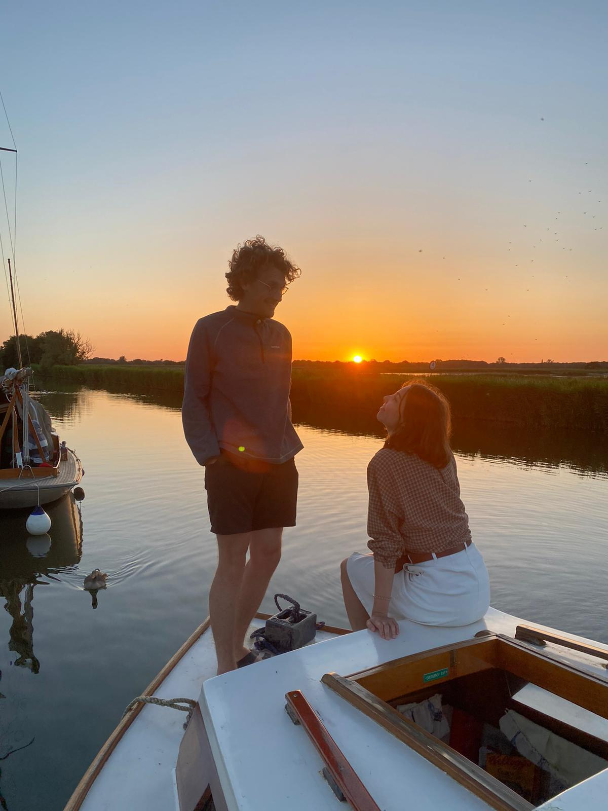
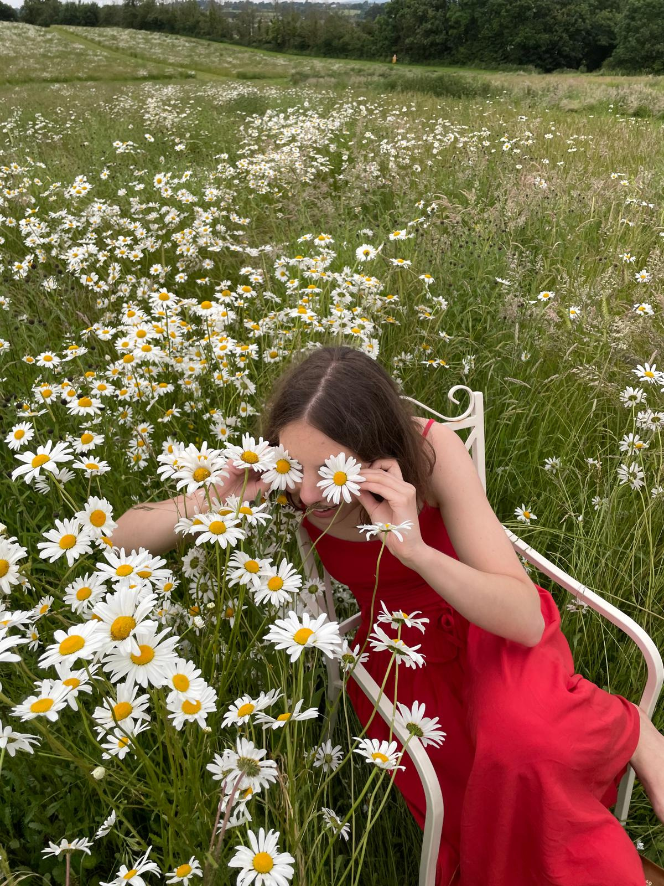

We're so happy you're here.
On 21 June 2026, we'll be getting married at Hestercombe, surrounded by the gardens in early summer bloom.
It means so much to us to celebrate this day with the people we love, and we can't wait to gather everyone together in such a beautiful setting.


Location
Hestercombe House & Gardens
Set in the Somerset countryside, Hestercombe has evolved over centuries, shaped by different eras and hands. The house dates back to the 16th century, while the formal gardens were later designed in the early 1900s by Sir Edwin Lutyens and Gertrude Jekyll, whose vision brought structure, softness and colour together in a distinctly English way. Stone terraces, long vistas and carefully planted borders create a sense of calm that unfolds as you walk through the grounds.
We'll be married in the Orangery, surrounded by the gardens in early summer bloom, before gathering in the Hall for dinner and dancing. There will be plenty of time throughout the day to wander, explore the terraces and take in the views — we hope you'll enjoy discovering the house and gardens as much as we do.
Schedule
13:00 · Guests arrive at Hestercombe
13:30 · Ceremony in the Orangery
14:15 · Drinks and canapés in the gardens
16:00 · Dinner in the Hall
18:30 · Speeches
19:30 · Evening celebrations begin
22:30 · Last orders
23:00 · Carriages
Travel & Stay
Getting There
Our wedding will take place at Hestercombe House and Gardens, just outside Taunton in Somerset:
- If you're driving, Hestercombe is around 15 minutes by car from Taunton town centre. There is parking available on site.
- If you're going by train, Taunton railway station has direct trains from London Paddington (1h 45m), as well as connections from Bristol or Exeter. Taxis are readily available from the station.
We recommend booking taxis in advance, particularly for the journey home in the evening. Local taxi companies include:
- Apple Taxis Taunton, +44 (0) 1823-333-333
- Gemini Taxis, +44 (0) 1823-332-211
- County Cars Taunton, +44 (0) 1823-444-444
We suggest allowing a little extra time on arrival so you can enjoy the setting and find your way to the Orangery without rushing.
Staying Nearby
There are several lovely places to stay in and around Taunton, from town-centre hotels to countryside inns and guesthouses.
Taunton offers the most convenient access, especially if you're travelling by train. For those who would prefer something more rural, there are beautiful options in the surrounding Somerset countryside.
We recommend booking accommodation early, as summer weekends can be busy.
Dress Code
Floral Formal
We'd love you to dress up and feel your best. Think summer elegance — suits, dresses or tailored separates in soft florals and romantic tones.
If you'd like to take inspiration from the gardens, shades of pink, blue, soft yellow and deeper burgundy will feel beautifully at home.
As a small request, we kindly ask guests to avoid wearing white — that one's reserved for the bride!
Part of the day will be spent outdoors, so comfortable shoes for grass and garden paths are a good idea.
Gifts
Your presence at our wedding is the greatest gift we could ask for… But if you would like to give something, a contribution towards our future together would mean a great deal to us.